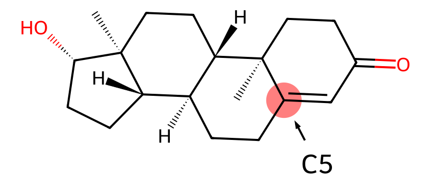
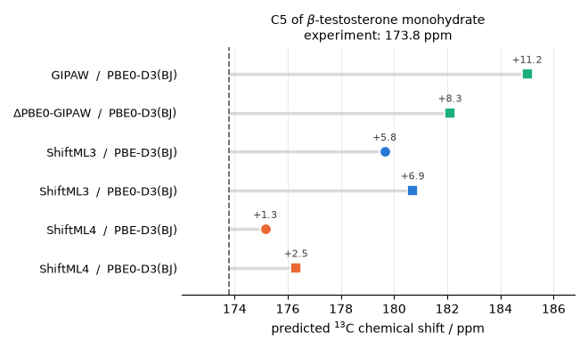
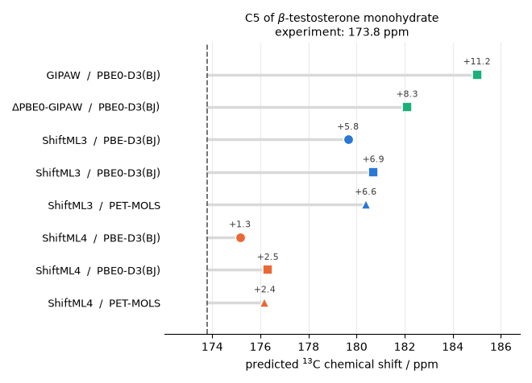
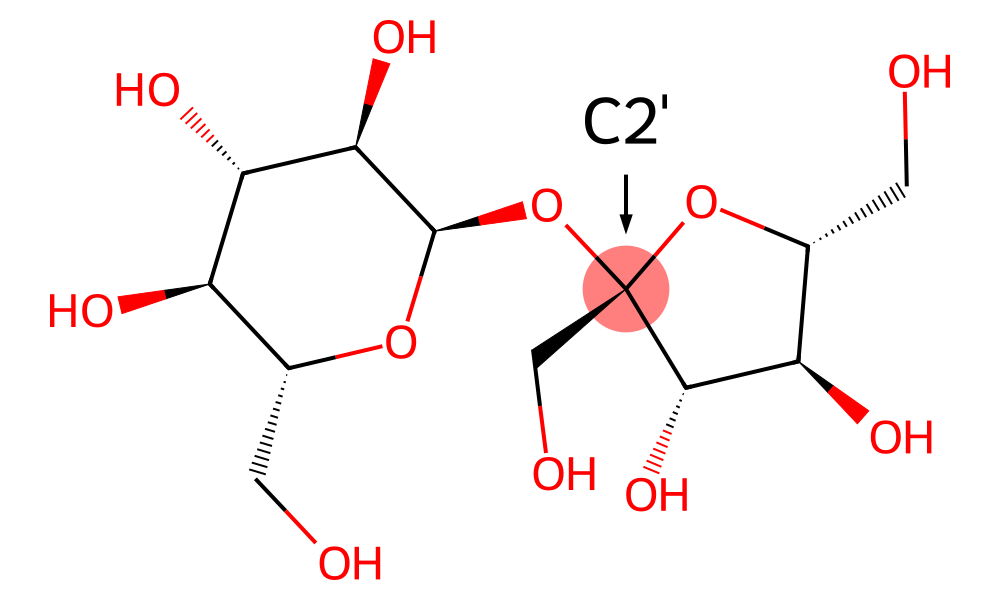
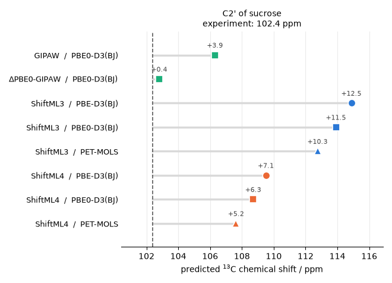

Note
Go to the end to download the full example code.
Accurate NMR chemical shifts with ShiftML4 and PET-MOLS¶
- Authors:
Matthias Kellner @bananenpampe
NMR crystallography determines the structure of a molecular solid by enumerating candidate crystal structures and keeping the one whose predicted chemical shifts are in best agreement with the experimental data. The whole procedure is therefore only as trustworthy as the shift predictions that are used for structure-experiment matching, and two rather different sources of errors limit the shift prediction accuracy:
the electronic-structure reference used to compute the shieldings – in practice many times the proven gauge-including projector augmented wave (GIPAW) method with a GGA functional such as PBE, is shown to limit the prediction accuracy.
the geometry the shieldings are computed on contributes to the prediction error. Geometries with unbiased bond lengths and bond angles are highly desirable for such purposes. However, relaxing periodic crystals at hybrid-functional quality is prohibitively expensive.
This recipe shows how to remove both bottlenecks with machine learning, using one model for each:
ShiftML4 (Kellner et al., arXiv:2608.21313), trained on molecular corrected periodic GIPAW calculations, which predicts shielding tensors of approximate hybrid-functional quality directly from the periodic crystal structure.
PET-MOLS, a machine-learned interatomic potential that relaxes molecular crystals to approximate PBE0+MBD geometries in seconds/minutes rather than CPU-hours.
We deliberately pick two 13C sites that are known to be hard problems for shift prediction:
the C5 carbon of \(\beta\)-testosterone monohydrate (CSD refcode
TESTOM01), where GIPAW-PBE is off by more than 10 ppm;the C2’ carbon of sucrose (CSD refcode
SUCROS04), part of a commonly used experimental benchmark set of isotropic 13C shifts for which ShiftML3 on PBE geometries showed the largest deviations. This example demonstrates that the combination of improved shielding reference electronic structure and PBE0+MBD quality geometries from the PET-MOLS MLIP significantly improves the prediction accuracy for this site, although it remains a challenging case for ShiftML4 presumably due to the limited coverage of the training set for this particular chemical environment.
For an introduction to running ShiftML itself – calculator setup, ensemble uncertainties, anisotropic tensors – see the companion recipe Computing NMR shielding tensors using ShiftML, and for a full NMR-crystallography workflow see NMR-shielding-driven structure determination with ShiftML3.
import ase.io
import chemiscope
import matplotlib.pyplot as plt
import numpy as np
from ase.optimize import BFGS
from shiftml.ase import ShiftML
from upet.calculator import UPETCalculator
Shieldings, shifts, and where the error comes from¶
What an electronic-structure calculation computes is the chemical shielding \(\sigma_{\mathrm{iso}}\), the isotropic part of the response of the local electron density to an external magnetic field. What an experiment reports is the chemical shift \(\delta_{\mathrm{iso}}\), measured relative to a reference compound. In practice, both are converted by a linear calibration,
where ideally \(A = -1\) (shielding lowers the resonance frequency) and \(B\) is the absolute shielding of the reference compound. In practice \(A\) and \(B\) are fitted by linear regression against a benchmark of assigned experimental shifts, which absorbs part of the systematic error of the underlying method. Crucially, the regression is specific to the combination of shielding model and geometry, so each pair below gets its own constants.
Improving the electronic-structure reference beyond GGA can be achieved with a monomer correction, introduced by Dračínský, Unzueta and Beran, Phys. Chem. Chem. Phys. 21, 14992 (2019): individual molecules are cut out of the unit cell and the difference between a hybrid and a GGA calculation on the isolated molecule is added back onto the periodic GIPAW result:
This works well, but it means every prediction either GIPAW-DFT or ShiftML, requires additional molecular DFT calculations along with it. The key idea of ShiftML4 is to train directly on the monomer-corrected shieldings: the correction is absorbed into the model weights, so at inference time only the periodic structure is taken as input and approximately hybrid-quality tensors are returned, with no fragment cutting and no molecular DFT required.
ShiftML4 is an ensemble of 7 nanoPET models – the same architecture and the same linear evaluation cost as ShiftML3, which was trained on plain GIPAW-PBE targets. Against experiment, ShiftML4 lowers the 13C isotropic RMSE from the 2.44 ppm of ShiftML3 to 1.67 ppm, which is also below the 2.34 ppm of the GIPAW-PBE calculations on identical geometries.
Referencing constants¶
The slopes and intercepts below are the 13C regressions reported for ShiftML3 and ShiftML4 by Kellner et al., fitted against assigned experimental shifts on a benchmark of organic crystals. Two sets are given per model, one fitted on GGA-quality (PBE-D3(BJ)) geometries and one on hybrid-quality ones.
One subtlety worth stating plainly: the “PBE0” regressions were fitted on geometries relaxed with PET-MOLS, which targets PBE0+MBD. We reuse them unchanged for the explicit PBE0-D3(BJ) DFT structures, for the PET-MOLS geometries they are exactly the constants that were fitted.
A_SML3_PBE, B_SML3_PBE = -0.9732, 166.23
A_SML3_PBE0, B_SML3_PBE0 = -0.9860, 170.67
A_SML4_PBE, B_SML4_PBE = -0.9128, 165.53
A_SML4_PBE0, B_SML4_PBE0 = -0.9255, 169.71
Loading the models¶
Both are committees rather than single networks – ShiftML3 has 8 members and ShiftML4 has 7 – so the first call fetches 15 checkpoints from Zenodo in total, which is what you see scrolling past in the log below. They are cached locally, so subsequent runs start instantly.
calc_sML3 = ShiftML("ShiftML3")
calc_sML4 = ShiftML("ShiftML4")
2026-08-24 21:18:51,120 - INFO - Found model version in url_resolve
2026-08-24 21:18:51,120 - INFO - Resolving model version to model files at url: https://zenodo.org/records/15767390/files/model_0.pt?download=1
2026-08-24 21:18:51,121 - INFO - Model not found in cache, downloading it
2026-08-24 21:19:08,110 - INFO - Downloaded ShiftML30 and saved to /home/runner/.cache/shiftml/ShiftML30
2026-08-24 21:19:08,263 - INFO - Found model version in url_resolve
2026-08-24 21:19:08,263 - INFO - Resolving model version to model files at url: https://zenodo.org/records/15767390/files/model_1.pt?download=1
2026-08-24 21:19:08,263 - INFO - Model not found in cache, downloading it
2026-08-24 21:19:24,909 - INFO - Downloaded ShiftML31 and saved to /home/runner/.cache/shiftml/ShiftML31
2026-08-24 21:19:25,055 - INFO - Found model version in url_resolve
2026-08-24 21:19:25,055 - INFO - Resolving model version to model files at url: https://zenodo.org/records/15767390/files/model_2.pt?download=1
2026-08-24 21:19:25,055 - INFO - Model not found in cache, downloading it
2026-08-24 21:19:28,196 - INFO - Downloaded ShiftML32 and saved to /home/runner/.cache/shiftml/ShiftML32
2026-08-24 21:19:28,341 - INFO - Found model version in url_resolve
2026-08-24 21:19:28,342 - INFO - Resolving model version to model files at url: https://zenodo.org/records/15767390/files/model_3.pt?download=1
2026-08-24 21:19:28,342 - INFO - Model not found in cache, downloading it
2026-08-24 21:19:31,359 - INFO - Downloaded ShiftML33 and saved to /home/runner/.cache/shiftml/ShiftML33
2026-08-24 21:19:31,505 - INFO - Found model version in url_resolve
2026-08-24 21:19:31,505 - INFO - Resolving model version to model files at url: https://zenodo.org/records/15767390/files/model_4.pt?download=1
2026-08-24 21:19:31,505 - INFO - Model not found in cache, downloading it
2026-08-24 21:19:34,342 - INFO - Downloaded ShiftML34 and saved to /home/runner/.cache/shiftml/ShiftML34
2026-08-24 21:19:34,487 - INFO - Found model version in url_resolve
2026-08-24 21:19:34,487 - INFO - Resolving model version to model files at url: https://zenodo.org/records/15767390/files/model_5.pt?download=1
2026-08-24 21:19:34,487 - INFO - Model not found in cache, downloading it
2026-08-24 21:19:37,363 - INFO - Downloaded ShiftML35 and saved to /home/runner/.cache/shiftml/ShiftML35
2026-08-24 21:19:37,508 - INFO - Found model version in url_resolve
2026-08-24 21:19:37,508 - INFO - Resolving model version to model files at url: https://zenodo.org/records/15767390/files/model_6.pt?download=1
2026-08-24 21:19:37,509 - INFO - Model not found in cache, downloading it
2026-08-24 21:19:40,610 - INFO - Downloaded ShiftML36 and saved to /home/runner/.cache/shiftml/ShiftML36
2026-08-24 21:19:40,756 - INFO - Found model version in url_resolve
2026-08-24 21:19:40,756 - INFO - Resolving model version to model files at url: https://zenodo.org/records/15767390/files/model_7.pt?download=1
2026-08-24 21:19:40,756 - INFO - Model not found in cache, downloading it
2026-08-24 21:19:43,714 - INFO - Downloaded ShiftML37 and saved to /home/runner/.cache/shiftml/ShiftML37
2026-08-24 21:19:43,858 - INFO - Found model version in url_resolve
2026-08-24 21:19:43,858 - INFO - Resolving model version to model files at url: https://zenodo.org/records/17444862/files/model_1.pt?download=1
2026-08-24 21:19:43,858 - INFO - Model not found in cache, downloading it
2026-08-24 21:19:46,709 - INFO - Downloaded ShiftML41 and saved to /home/runner/.cache/shiftml/ShiftML41
2026-08-24 21:19:46,857 - INFO - Found model version in url_resolve
2026-08-24 21:19:46,857 - INFO - Resolving model version to model files at url: https://zenodo.org/records/17444862/files/model_2.pt?download=1
2026-08-24 21:19:46,858 - INFO - Model not found in cache, downloading it
2026-08-24 21:19:49,739 - INFO - Downloaded ShiftML42 and saved to /home/runner/.cache/shiftml/ShiftML42
2026-08-24 21:19:49,888 - INFO - Found model version in url_resolve
2026-08-24 21:19:49,888 - INFO - Resolving model version to model files at url: https://zenodo.org/records/17444862/files/model_3.pt?download=1
2026-08-24 21:19:49,888 - INFO - Model not found in cache, downloading it
2026-08-24 21:19:52,726 - INFO - Downloaded ShiftML43 and saved to /home/runner/.cache/shiftml/ShiftML43
2026-08-24 21:19:52,873 - INFO - Found model version in url_resolve
2026-08-24 21:19:52,873 - INFO - Resolving model version to model files at url: https://zenodo.org/records/17444862/files/model_4.pt?download=1
2026-08-24 21:19:52,873 - INFO - Model not found in cache, downloading it
2026-08-24 21:19:55,990 - INFO - Downloaded ShiftML44 and saved to /home/runner/.cache/shiftml/ShiftML44
2026-08-24 21:19:56,139 - INFO - Found model version in url_resolve
2026-08-24 21:19:56,140 - INFO - Resolving model version to model files at url: https://zenodo.org/records/17444862/files/model_5.pt?download=1
2026-08-24 21:19:56,140 - INFO - Model not found in cache, downloading it
2026-08-24 21:19:59,048 - INFO - Downloaded ShiftML45 and saved to /home/runner/.cache/shiftml/ShiftML45
2026-08-24 21:19:59,197 - INFO - Found model version in url_resolve
2026-08-24 21:19:59,197 - INFO - Resolving model version to model files at url: https://zenodo.org/records/17444862/files/model_6.pt?download=1
2026-08-24 21:19:59,197 - INFO - Model not found in cache, downloading it
2026-08-24 21:20:02,031 - INFO - Downloaded ShiftML46 and saved to /home/runner/.cache/shiftml/ShiftML46
2026-08-24 21:20:02,179 - INFO - Found model version in url_resolve
2026-08-24 21:20:02,179 - INFO - Resolving model version to model files at url: https://zenodo.org/records/17444862/files/model_7.pt?download=1
2026-08-24 21:20:02,179 - INFO - Model not found in cache, downloading it
2026-08-24 21:20:05,150 - INFO - Downloaded ShiftML47 and saved to /home/runner/.cache/shiftml/ShiftML47
The C5 carbon of \(\beta\)-testosterone¶
\(\beta\)-testosterone monohydrate crystallises with one testosterone and one water molecule in the asymmetric unit. Most of its 13C shifts are reproduced perfectly well by standard methods – but C5, the non-protonated olefinic carbon of the enone motif highlighted below, is a severe outlier. Ramos and co-workers found GIPAW-PBE errors of 7–11 ppm for this site, against a typical 13C accuracy of ~2 ppm, and showed that the error does not reduce noticeably with hybrid functional quality geometries (Ramos, Mueller and Beran, “The interplay of density functional selection and crystal structure for accurate NMR chemical shift predictions”, Faraday Discuss. 255, 119 (2025)). It is a failure of the electronic structure of the shift computation method, not of the geometry.
{kind=link}

The testosterone molecule, with the problematic C5 carbon highlighted.¶
IDX_C5 = 58 # index of C5 in the crystal structures used here
We load the same crystal structure relaxed at two levels of theory, PBE-D3(BJ) and PBE0-D3(BJ), both with the experimental lattice parameters held fixed. These come from the supporting information of Ramos et al., Faraday Discuss. 255, 119 (2025).
frame_PBE = ase.io.read("data/TESTOM01_pbe.cif")
frame_PBE0 = ase.io.read("data/TESTOM01_pbe0.cif")
Let us look at where C5 actually sits in the unit cell.
def show_highlighted(frame, atom_index, label, color=0x1FBF4A, radius=1.0):
"""Structure-only chemiscope widget marking one atom with a coloured sphere.
The marker is a per-atom shape: every atom carries one, but all of them
except ``atom_index`` are shrunk to nothing so a single sphere is drawn.
The viewer reads the radius as ``radius || 1``, so it must be small rather
than zero -- a zero radius is falsy there and turns into a full-size sphere.
"""
marker = {
"kind": "sphere",
"parameters": {
"global": {"color": color},
"atom": [
{"radius": radius if i == atom_index else 1e-6}
for i in range(len(frame))
],
},
}
return chemiscope.show(
structures=[frame],
shapes={label: marker},
# the atom of interest is the only environment, so it is the one the
# viewer selects when the widget opens
environments=[(0, atom_index, 4.0)],
mode="structure",
settings={
"structure": [
{
"shape": [label],
"unitCell": True,
"bonds": True,
# the green sphere already marks the atom, so chemiscope's
# own translucent environment sphere would only get in the way
"environments": {"activated": False},
}
]
},
metadata={"name": f"{label} highlighted in green"},
)
show_highlighted(frame_PBE, IDX_C5, "C5", radius=0.5)

Reference values¶
The experimental shift, and the two GIPAW numbers we will compare against, are
taken from Ramos et al. cs_iso_GIPAW_C5 is a plain periodic GIPAW-PBE
calculation; cs_iso_GIPAW_PBE0_C5 adds an explicit PBE0 monomer correction
on top of it – that is, the reference theory level that ShiftML4 replicates.
Note that both are computed on the same PBE0-D3(BJ) geometry, so the two
differ only in the level of theory used for the shielding.
cs_iso_ref_C5 = 173.8 # experiment, beta-testosterone (TESTOM01)
# both on the PBE0-D3(BJ) geometry
cs_iso_GIPAW_C5 = 185.0 # plain GIPAW-PBE
cs_iso_GIPAW_PBE0_C5 = 182.1 # GIPAW-PBE + PBE0 monomer correction
Predicting shifts on DFT-relaxed geometries¶
get_cs_iso returns the isotropic shielding for every atom in the frame, as
the mean over the model ensemble. Each call takes a couple of seconds for this
208-atom cell – the equivalent GIPAW calculation would take hours on a compute
node.
cs_iso_sML3_PBE = A_SML3_PBE * calc_sML3.get_cs_iso(frame_PBE) + B_SML3_PBE
cs_iso_sML3_PBE0 = A_SML3_PBE0 * calc_sML3.get_cs_iso(frame_PBE0) + B_SML3_PBE0
cs_iso_sML4_PBE = A_SML4_PBE * calc_sML4.get_cs_iso(frame_PBE) + B_SML4_PBE
cs_iso_sML4_PBE0 = A_SML4_PBE0 * calc_sML4.get_cs_iso(frame_PBE0) + B_SML4_PBE0
To compare methods on a single site, we plot each prediction as a point on the chemical-shift axis, with a bar connecting it to the experimental value. Colour identifies the shielding method family and the marker shape identifies the geometry the shieldings were computed on.
MODEL_COLORS = {
"GIPAW": "#1baf7a",
# the monomer-corrected result comes from the same GIPAW calculation, so it
# keeps the same colour; the row label carries the distinction
r"$\Delta$PBE0-GIPAW": "#1baf7a",
"ShiftML3": "#2a78d6",
"ShiftML4": "#eb6834",
}
GEOMETRY_MARKERS = {
"PBE-D3(BJ)": "o",
"PBE0-D3(BJ)": "s",
"PET-MOLS": "^",
}
def plot_site(entries, experiment, title):
"""Dot plot of predicted shifts for a single site, against experiment.
``entries`` is a list of ``(model, geometry, shift)`` tuples, drawn from top
to bottom in the order given.
"""
fig, ax = plt.subplots(figsize=(6.6, 0.42 * len(entries) + 1.4))
positions = list(range(len(entries)))[::-1]
for y, (model, geometry, value) in zip(positions, entries):
# the connector makes the signed deviation from experiment visible
ax.plot([experiment, value], [y, y], color="0.85", lw=2.5, zorder=1)
ax.plot(
value,
y,
marker=GEOMETRY_MARKERS[geometry],
markersize=9,
color=MODEL_COLORS[model],
markeredgecolor="white",
markeredgewidth=1.2,
zorder=3,
)
ax.annotate(
f"{value - experiment:+.1f}",
(value, y),
textcoords="offset points",
xytext=(0, 9),
ha="center",
fontsize=8,
color="0.25",
)
ax.axvline(experiment, color="0.35", ls="--", lw=1.2, zorder=2)
ax.set_yticks(positions, [f"{m} / {g}" for m, g, _ in entries], fontsize=9)
ax.set_xlabel(r"predicted $^{13}$C chemical shift / ppm")
ax.set_title(f"{title}\nexperiment: {experiment:.1f} ppm", fontsize=10)
ax.margins(x=0.16, y=0.14)
ax.grid(axis="x", color="0.92", lw=0.8)
ax.set_axisbelow(True)
for side in ("top", "right", "left"):
ax.spines[side].set_visible(False)
ax.tick_params(axis="y", length=0)
fig.tight_layout()
plot_site(
[
("GIPAW", "PBE0-D3(BJ)", cs_iso_GIPAW_C5),
(r"$\Delta$PBE0-GIPAW", "PBE0-D3(BJ)", cs_iso_GIPAW_PBE0_C5),
("ShiftML3", "PBE-D3(BJ)", cs_iso_sML3_PBE[IDX_C5]),
("ShiftML3", "PBE0-D3(BJ)", cs_iso_sML3_PBE0[IDX_C5]),
("ShiftML4", "PBE-D3(BJ)", cs_iso_sML4_PBE[IDX_C5]),
("ShiftML4", "PBE0-D3(BJ)", cs_iso_sML4_PBE0[IDX_C5]),
],
cs_iso_ref_C5,
r"C5 of $\beta$-testosterone monohydrate",
)

The pattern is exactly the one the built-in monomer correction is meant to produce. GIPAW-PBE overshoots by more than 11 ppm; the explicit PBE0 monomer correction recovers about 3 ppm of that. ShiftML3, trained on GIPAW-PBE targets, lands closer than its own training reference here – which for such an extreme outlier is at least partly fortuitous. ShiftML4 gets within 1–3 ppm of experiment, comparable to what the Faraday Discussions study only reached with a double-hybrid monomer correction, and at a fraction of the cost.
Note also how little the choice of DFT geometry matters for this site: PBE and PBE0 structures give answers within about 1 ppm of each other for both ShiftML models. That is the quantitative version of the statement above – C5 is an shift prediction problem, not a matter of reference geometry.
Relaxing the structure with PET-MOLS¶
So far we have been handed DFT-relaxed geometries. In a real NMR-crystallography campaign you would have to generate them yourself, and periodic hybrid-functional relaxations of a 208-atom cell may certainly be the bottleneck when dealing with hundreds of candidate structures.
PET-MOLS is a machine-learned interatomic potential trained on PBE0+MBD reference data for molecular systems, and it covers the same chemical space as ShiftML. It replaces periodic DFT energy and force calculations entirely. PET-MOLS can be invoked from the upet library. Below we start from the raw experimental CSD structure.
calculator = UPETCalculator(model="pet-mols-s")
frame_CSD = ase.io.read("data/TESTOM01.cif")
2026-08-24 21:20:30,799 - INFO - HTTP Request: GET https://huggingface.co/api/agent-harnesses "HTTP/1.1 200 OK"
2026-08-24 21:20:30,881 - INFO - HTTP Request: GET https://huggingface.co/api/models/lab-cosmo/upet/tree/main?recursive=true&expand=false "HTTP/1.1 200 OK"
2026-08-24 21:20:30,882 - INFO - Loading pre-trained model: pet-mols-s-v1.1.0.ckpt
2026-08-24 21:20:30,965 - INFO - HTTP Request: HEAD https://huggingface.co/lab-cosmo/upet/resolve/main/models/pet-mols-s-v1.1.0.ckpt "HTTP/1.1 302 Found"
Warning: You are sending unauthenticated requests to the HF Hub. Please set a HF_TOKEN to enable higher rate limits and faster downloads.
2026-08-24 21:20:30,966 - WARNING - Warning: You are sending unauthenticated requests to the HF Hub. Please set a HF_TOKEN to enable higher rate limits and faster downloads.
2026-08-24 21:20:32,143 - INFO - Using best model from epoch None
/home/runner/work/atomistic-cookbook/atomistic-cookbook/.nox/shiftml4/lib/python3.11/site-packages/ase/io/cif.py:411: UserWarning: crystal system 'orthorhombic' is not interpreted for space group Spacegroup(19, setting=1). This may result in wrong setting!
warnings.warn(
We keep the cell fixed at its experimental values, which implicitly retains the finite-temperature thermal expansion that a 0 K relaxation would remove. For an actual structure determination campaign, this assumption would need to be critically evaluated, after all, a priori the experimental lattice parameters are not known. Luckily, PBE0+MBD the reference method PET-MOLS is trained on, is known to reproduce experimental lattice parameters of molecular crystals very well.
A note on the optimiser, since it dominates the cost of this recipe. ASE’s
BFGSLineSearch performs a line search at every step, which for this system
costs roughly nine force evaluations per step, whereas plain BFGS costs
one. Both converge to the same minimum in a similar number of steps, so
BFGS gets there about eight times faster: relaxing the testosterone cell
below takes ~20 s instead of ~160 s, and the resulting C5 shift moves by only
0.1 ppm – far less than the ~1.5 ppm RMSE of the model itself.
If you run this locally and want a more tightly converged structure, lower
fmax (the recipe uses 0.05 eV/A) or swap in BFGSLineSearch:
from ase.optimize import BFGSLineSearch
relaxed = optimize(frame_CSD, calculator, fmax=1e-2) # tighter
# ...or, for the line-search optimiser used in the original workflow:
structure = frame_CSD.copy()
structure.calc = calculator
BFGSLineSearch(structure, logfile="-").run(fmax=1e-2, steps=200)
Neither changes the conclusions below; both take considerably longer.
def optimize(frame, calc, fmax=5e-2, steps=200):
"""Relax atomic positions at fixed cell, returning the relaxed frame."""
structure = frame.copy()
structure.calc = calc
# logfile="-" sends the convergence table to stdout, where sphinx-gallery
# picks it up and renders it below the cell
dyn = BFGS(structure, logfile="-")
dyn.run(fmax=fmax, steps=steps)
return structure
relaxed_frame = optimize(frame_CSD, calculator)
Step Time Energy fmax
BFGS: 0 21:20:34 -105234.539062 18.144607
BFGS: 1 21:20:36 -105260.609375 6.855409
BFGS: 2 21:20:38 -105267.718750 4.610329
BFGS: 3 21:20:39 -105270.515625 4.343630
BFGS: 4 21:20:40 -105271.601562 0.938363
BFGS: 5 21:20:41 -105272.054688 0.763715
BFGS: 6 21:20:42 -105272.664062 0.716352
BFGS: 7 21:20:44 -105272.812500 0.886223
BFGS: 8 21:20:45 -105273.000000 0.671727
BFGS: 9 21:20:46 -105273.140625 0.328364
BFGS: 10 21:20:47 -105273.187500 0.252060
BFGS: 11 21:20:48 -105273.234375 0.225572
BFGS: 12 21:20:49 -105273.265625 0.214277
BFGS: 13 21:20:51 -105273.296875 0.197778
BFGS: 14 21:20:52 -105273.320312 0.177394
BFGS: 15 21:20:53 -105273.343750 0.139081
BFGS: 16 21:20:54 -105273.359375 0.136820
BFGS: 17 21:20:55 -105273.375000 0.202259
BFGS: 18 21:20:57 -105273.382812 0.263568
BFGS: 19 21:20:58 -105273.390625 0.132505
BFGS: 20 21:20:59 -105273.398438 0.094052
BFGS: 21 21:21:00 -105273.406250 0.071105
BFGS: 22 21:21:01 -105273.414062 0.079088
BFGS: 23 21:21:02 -105273.414062 0.055067
BFGS: 24 21:21:04 -105273.421875 0.052462
BFGS: 25 21:21:05 -105273.421875 0.055834
BFGS: 26 21:21:06 -105273.429688 0.062334
BFGS: 27 21:21:07 -105273.429688 0.048125
This takes a couple of minutes on a laptop CPU, and is by far the most expensive step of the whole recipe – which is the point: the equivalent periodic hybrid-DFT relaxation would run for days.
Since PET-MOLS targets PBE0-quality geometries, we reference the resulting shieldings with the hybrid-geometry constants.
cs_iso_sML3_PET_MOLS = A_SML3_PBE0 * calc_sML3.get_cs_iso(relaxed_frame) + B_SML3_PBE0
cs_iso_sML4_PET_MOLS = A_SML4_PBE0 * calc_sML4.get_cs_iso(relaxed_frame) + B_SML4_PBE0
Adding the two new predictions to the comparison:
plot_site(
[
("GIPAW", "PBE0-D3(BJ)", cs_iso_GIPAW_C5),
(r"$\Delta$PBE0-GIPAW", "PBE0-D3(BJ)", cs_iso_GIPAW_PBE0_C5),
("ShiftML3", "PBE-D3(BJ)", cs_iso_sML3_PBE[IDX_C5]),
("ShiftML3", "PBE0-D3(BJ)", cs_iso_sML3_PBE0[IDX_C5]),
("ShiftML3", "PET-MOLS", cs_iso_sML3_PET_MOLS[IDX_C5]),
("ShiftML4", "PBE-D3(BJ)", cs_iso_sML4_PBE[IDX_C5]),
("ShiftML4", "PBE0-D3(BJ)", cs_iso_sML4_PBE0[IDX_C5]),
("ShiftML4", "PET-MOLS", cs_iso_sML4_PET_MOLS[IDX_C5]),
],
cs_iso_ref_C5,
r"C5 of $\beta$-testosterone monohydrate",
)

The PET-MOLS geometries reproduce the shift predictions from DFT geometries to within a few tenths of a ppm, for both models. In other words, the entire DFT geometry optimisation can be replaced by a machine-learned relaxation without any loss of accuracy in the predicted shift, and the resulting workflow, from CIF to chemical shift, contains no electronic-structure calculation at all.
Across the full experimental benchmark this combination is what gives ShiftML4 impressive accuracies against experiment: a 13C RMSE of 1.49 ppm on PET-MOLS geometries, against 2.44 ppm for ShiftML3 on PBE geometries.
The C2’ carbon of sucrose¶
Sucrose (SUCROS04, two molecules per unit cell)
contains a quaternary anomeric carbon, C2’ of the
fructofuranose ring, which is bonded to two oxygens and sits at the glycosidic
linkage. This site is poorly described by both ShiftML models.
{kind=link}

The sucrose molecule, with the C2’ carbon highlighted.¶
IDX_C2_prime = 50
cs_iso_ref_C2_prime = 102.40 # https://doi.org/10.1006/jmra.1993.1201
# GIPAW reference values, as above: both on the PBE0-D3(BJ) geometry
cs_iso_GIPAW_C2_prime = 106.3 # plain GIPAW-PBE
cs_iso_GIPAW_PBE0_C2_prime = 102.8 # GIPAW-PBE + PBE0 monomer correction
frame_sucrose_PBE = ase.io.read("data/succrose_pbe-d3bj.cif")
frame_sucrose_PBE0 = ase.io.read("data/succrose_pbe0-d3bj.cif")
show_highlighted(frame_sucrose_PBE, IDX_C2_prime, "C2'")
The same four model/geometry combinations as before:
cs_sucrose_sML3_PBE = (
A_SML3_PBE * calc_sML3.get_cs_iso(frame_sucrose_PBE)[IDX_C2_prime] + B_SML3_PBE
)
cs_sucrose_sML3_PBE0 = (
A_SML3_PBE0 * calc_sML3.get_cs_iso(frame_sucrose_PBE0)[IDX_C2_prime] + B_SML3_PBE0
)
cs_sucrose_sML4_PBE = (
A_SML4_PBE * calc_sML4.get_cs_iso(frame_sucrose_PBE)[IDX_C2_prime] + B_SML4_PBE
)
cs_sucrose_sML4_PBE0 = (
A_SML4_PBE0 * calc_sML4.get_cs_iso(frame_sucrose_PBE0)[IDX_C2_prime] + B_SML4_PBE0
)
We also relax sucrose with PET-MOLS. This cell is much smaller (90 atoms), and to keep the recipe fast we start from the PBE0-relaxed structure rather than from the raw experimental one, so the optimiser converges in a handful of steps.
relaxed_sucrose = optimize(frame_sucrose_PBE0, calculator)
cs_sucrose_sML3_PET_MOLS = (
A_SML3_PBE0 * calc_sML3.get_cs_iso(relaxed_sucrose)[IDX_C2_prime] + B_SML3_PBE0
)
cs_sucrose_sML4_PET_MOLS = (
A_SML4_PBE0 * calc_sML4.get_cs_iso(relaxed_sucrose)[IDX_C2_prime] + B_SML4_PBE0
)
Step Time Energy fmax
BFGS: 0 21:21:24 -70600.882812 0.529625
BFGS: 1 21:21:25 -70600.953125 0.150754
BFGS: 2 21:21:25 -70600.960938 0.092358
BFGS: 3 21:21:26 -70600.968750 0.090016
BFGS: 4 21:21:27 -70600.976562 0.094672
BFGS: 5 21:21:27 -70600.976562 0.073356
BFGS: 6 21:21:28 -70600.976562 0.062903
BFGS: 7 21:21:28 -70600.976562 0.052486
BFGS: 8 21:21:29 -70600.984375 0.065515
BFGS: 9 21:21:29 -70600.984375 0.054404
BFGS: 10 21:21:30 -70600.984375 0.029733
plot_site(
[
("GIPAW", "PBE0-D3(BJ)", cs_iso_GIPAW_C2_prime),
(r"$\Delta$PBE0-GIPAW", "PBE0-D3(BJ)", cs_iso_GIPAW_PBE0_C2_prime),
("ShiftML3", "PBE-D3(BJ)", cs_sucrose_sML3_PBE),
("ShiftML3", "PBE0-D3(BJ)", cs_sucrose_sML3_PBE0),
("ShiftML3", "PET-MOLS", cs_sucrose_sML3_PET_MOLS),
("ShiftML4", "PBE-D3(BJ)", cs_sucrose_sML4_PBE),
("ShiftML4", "PBE0-D3(BJ)", cs_sucrose_sML4_PBE0),
("ShiftML4", "PET-MOLS", cs_sucrose_sML4_PET_MOLS),
],
cs_iso_ref_C2_prime,
"C2' of sucrose",
)

Here the ordering is reversed: GIPAW does well on this site, and both ShiftML models overshoot badly. ShiftML3 on PBE geometries is off by more than 12 ppm. The trends within the ML predictions are nevertheless the ones we would hope for – moving to the ShiftML4 reference reduces prediction errors by about 5 ppm, and the PET-MOLS geometry improves predictions by another 1–2 ppm, so the best ML combination roughly halves the ShiftML3 error. But it is still a 5 ppm error on a site where a monomer-corrected GIPAW calculation is in good agreement with experiment.
Can we tell in advance that this site is unreliable?¶
ShiftML3 and ShiftML4 are committee models, and the ShiftML calculator function
get_cs_iso_ensemble returns the individual member predictions rather than
only their mean. The spread across the committee is a practical approach for
uncertainty estimation of the model predictions, so it is worth asking whether
it would have warned us about C2’ of sucrose.
for label, frame, index in [
("testosterone C5", frame_PBE0, IDX_C5),
("sucrose C2'", frame_sucrose_PBE0, IDX_C2_prime),
]:
spread = calc_sML4.get_cs_iso_ensemble(frame).std(axis=1)
carbons = [i for i, s in enumerate(frame.get_chemical_symbols()) if s == "C"]
print(
f"{label:16s} committee spread at this site: {spread[index]:.2f} ppm "
f"(median over all C in the cell: {np.median(spread[carbons]):.2f} ppm)"
)
testosterone C5 committee spread at this site: 3.01 ppm (median over all C in the cell: 1.12 ppm)
sucrose C2' committee spread at this site: 1.95 ppm (median over all C in the cell: 1.17 ppm)
Both sites stand out from their surroundings: the committee disagrees roughly twice as much about them as about a typical carbon in the same crystal, so the uncertainty does succeed in flagging them as unusual environments.
But note the ordering. The spread is larger for testosterone C5, where ShiftML4 is accurate to about 2 ppm, than for sucrose C2’, where it is off by 5 ppm. The committee spread is a useful triage signal for finding environments that the training set covers poorly – it is not a calibrated error bar for an individual site against experiment, and it should not be read as one. Importantly it only gives a confidence interval against the reference theory level the model was trained on, and not against experiment, so further errors from the electronic structure reference might add to the total error.
Conclusions¶
ShiftML4 absorbs hybrid-functional monomer corrections directly into the model, so a single forward pass on a periodic structure returns shielding tensors that are closer to experiment than the GIPAW-PBE calculations the ShiftML family was originally trained to reproduce. Combined with PET-MOLS for geometry relaxation, it turns a workflow that used to cost CPU-days per candidate structure into one that runs end-to-end, from a CIF file to referenced chemical shifts, in a couple of minutes on a laptop.
The testosterone C5 example shows the practical relevance of the approach on a site where the GIPAW reference genuinely fails. The sucrose C2’ example shows that the model is not perfect: it is still off by 5 ppm on a site where molecular corrected GIPAW DFT calculations are in excellent agreement with experiment. This is not a failure of the ML model per se, but rather a limitation of using a surrogate model for predictions in rare local environments. The committee spread flags such sites as unusual without ranking them reliably. These fast predictions are therefore perfect to screen a large pool of candidate structures or compute finite temperature effects from an ensemble of structures, and in case of doubt explicit calculations for the handful of cases that matter can be performed to verify ShiftML4s predictions.
Total running time of the script: (2 minutes 54.331 seconds)